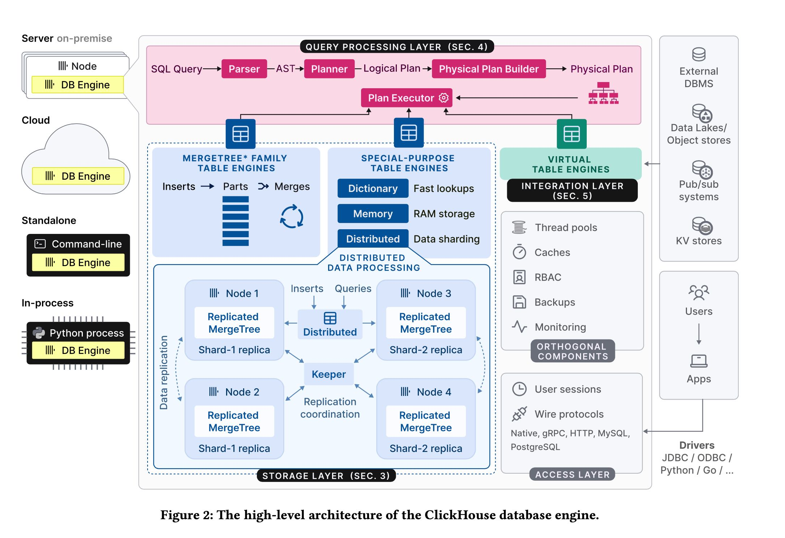
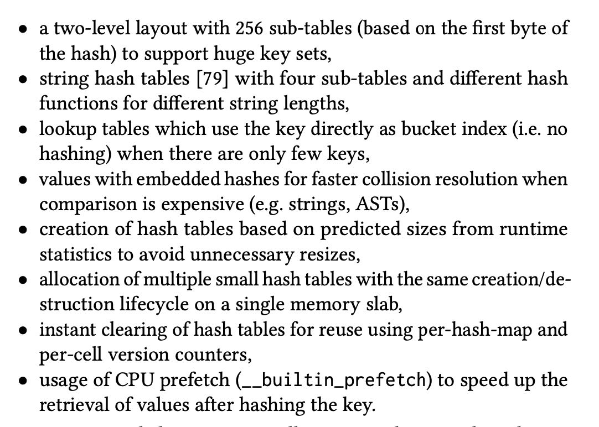

ClickHouse - Lightning Fast Analytics for Everyone
CK主要是面向快速数据分析这个场景，假设大量数据写入主要是追加，基本上没有更新和删除操作，也没有schema change这样的操作(文章里面好像还没有说到schema change相关内容)。在事务上做的比较拉胯，可能会读取到过期数据以及一半数据，甚至写入返回也不保证完全落盘。感觉CK这些人对查询分析非常有兴趣，对数据事务完全没有兴趣，估计会把客户给搞惨。
架构上有这么几个特点
- 几种SQL方言，但是看上去好像比较陌生，哪怕支持PGSQL, MySQL也好
- storage layer大致分为3类:merge tree(单机主打), replicated merge tree(分布式), virtual table(对接外部系统)
- 替换掉了zookeeper自己实现了rafe-based协议来做replication.
- 支持多种wire-protocol, 以及多种部署方式。最近收购的chDB就是in-process部署
[!NOTE]
Query processing follows the traditional paradigm of parsing in- coming queries, building and optimizing logical and physical query plans, and execution. ClickHouse uses a vectorized execution model similar to MonetDB/X100 [11], in combination with opportunistic code compilation [53]. Queries can be written in a feature-rich SQL dialect, PRQL [76], or Kusto’s KQL [50].
The storage layer consists of different table engines that encap- sulate the format and location of table data. Table engines fall into three categories: The first category is the MergeTree* family of table engines which represent the primary persistence format in ClickHouse. Based on the idea of LSM trees [60], tables are split into horizontal, sorted parts, which are continuously merged by a background process. Individual MergeTree* table engines differ in the way the merge combines the rows from its input parts. For example, rows can be aggregated or replaced, if outdated.
The second category are special-purpose table engines, which are used to speed up or distribute query execution. This category includes in-memory key-value table engines called dictionaries. A dictionary caches the result of a query periodically executed against an internal or external data source. This significantly reduces ac- cess latencies in scenarios, where a degree of data staleness can be tolerated.2 Other examples of special-purpose table engines in- clude a pure in-memory engine used for temporary tables and the Distributed table engine for transparent data sharding (see below).
The third category of table engines are virtual table engines for bidirectional data exchange with external systems such as relational databases (e.g. PostgreSQL, MySQL), publish/subscribe systems (e.g. Kafka, RabbitMQ [24]), or key/value stores (e.g. Redis). Virtual engines can also interact with data lakes (e.g. Iceberg, DeltaLake, Hudi [36]) or files in object storage (e.g. AWS S3, Google GCP).
To that end, each Merge- Tree* table engine has a corresponding ReplicatedMergeTree* engine which uses a multi-master coordination scheme based on Raft con- sensus [59] (implemented by Keeper3, a drop-in replacement for Apache Zookeeper written in C++) to guarantee that every shard has, at all times, a configurable number of replicas.

on-disk format好像有这么几个点：
- 支持async insert. 这个是可以攒批来进行提交的。
- 每个table sharding叫做parts. 这些parts是按照LSM来管理的定期做合并。
- 每个column一个文件，但是如果小的话也可能会做合并。
- 8192 rows 是一个granule, 多个granules组成一个block(~1MB). block作为物理管理单元，granule作为逻辑管理单元。
- 比如primary index(或者是sort index) 会按照granule抽取prefix index.
- block上会增加索引比如min-max, bloom filter, bitmap index.
- projection则是类似同步MV的感觉：写base table的时候也会写这个MV.
在data transformation上除了普通的merge外，ttl merge比较有意思，就是可以将冷数据挪动出去。如果一个part下面所有的rows都满足某个条件的话，那么这个part就可以挪到s3上。比如下面 `ts` 如果超过当前1周的话，那么就会被挪走，但是前提是比较容易并且有效地查询s3. s3和locak-disk io characteristic 是完全不同的。
[!NOTE]
CREATE TABLE tab(ts DateTime , msg String) ENGINE MergeTree PRIMARY KEY ts TTL (ts + INTERVAL 1 WEEK) TO VOLUME 's3'
update/deletes 基本上就是按照最简单的方式处理，也不作为什么事务管理。如果做事务管理的话，那么操作的时候空间可能是会翻倍的。replication node上可能存在stale数据，写入返回并不能保证持久化。
[!NOTE] The design of the MergeTree* table engines favors append-only workloads, yet some use cases require to modify existing data occa- sionally, e.g. for regulatory compliance. Two approaches for updat- ing or deleting data exist, neither of which block parallel inserts.
Mutations rewrite all parts of a table in-place. To prevent a table (delete) or column (update) from doubling temporarily in size, this operation is non-atomic, i.e. parallel SELECT statements may read mutated and non-mutated parts. Mutations guarantee that the data is physically changed at the end of the operation. Delete mutations are still expensive as they rewrite all columns in all parts.
As an alternative, lightweight deletes only update an internal bitmap column, indicating if a row is deleted or not. ClickHouse amends SELECT queries with an additional filter on the bitmap column to exclude deleted rows from the result. Deleted rows are physically removed only by regular merges at an unspecified time in future. Depending on the column count, lightweight deletes can be much faster than mutations, at the cost of slower SELECTs.
Update and delete operations performed on the same table are expected to be rare and serialized to avoid logical conflicts.
To maximize the performance of concurrent read and write oper- ations, ClickHouse avoids latching as much as possible. Queries are executed against a snapshot of all parts in all involved tables created at the beginning of the query. This ensures that new parts inserted by parallel INSERTs or merges (Section 3.1) do not partici- pate in execution. To prevent parts from being modified or removed simultaneously (Section 3.4), the reference count of the processed parts is incremented for the duration of the query. Formally, this corresponds to snapshot isolation realized by an MVCC variant [6] based on versioned parts. As a result, statements are generally not ACID-compliant except for the rare case that concurrent writes at the time the snapshot is taken each affect only a single part.
In practice, most of ClickHouse’s write-heavy decision making use cases even tolerate a small risk of losing new data in case of a power outage. The database takes advantage of this by not forcing a commit (fsync) of newly inserted parts to disk by default, allowing the kernel to batch writes at the cost of forgoing atomicity.
CK在查询上做了相当多的优化: simd, pipeline(multi-cores), mpp. 但是CK没有使用morsel-driven parallelism的方式，而是指定了DOP. CK在hashtable上投入了不少精力，这个是基础数据结构对join/agg都非常有用。sort没有提到，这方面应该是duckdb做的比较好吧。 Fastest Table Sort in the West – Redesigning DuckDB’s Sort – DuckDB
[!NOTE] ClickHouse’s query execution engine and morsel-driven par- allelism [44] are similar in that lanes are normally executed on different cores / NUMA sockets and that worker threads can steal tasks from other lanes. Also, there is no central scheduling com- ponent; instead, worker threads select their tasks individually by continuously traversing the operator plan. Unlike morsel-driven parallelism, ClickHouse bakes the maximum degree of parallelism into the plan and uses much bigger ranges to partition the source table compared to default morsel sizes of ca. 100.000 rows. While this may in some cases cause stalls (e.g. when the runtime of filter operators in different lanes differ vastly) we find that liberal use of exchange operators such as Repartition at least avoids such imbalances from accumulating across stages.
Hash tables are fundamental data structures for aggregation and hash joins. Choosing the right type of hash table is critical to performance. ClickHouse instantiates various hash tables (over 30 as of March 2024) from a generic hash table template with the hash function, allocator, cell type, and resize policy as variation points. Depending on the data type of the grouping columns, the estimated hash table cardinality, and other factors, the fastest hash table is selected for each query operator individually.8 Further optimizations implemented for hash tables include:
